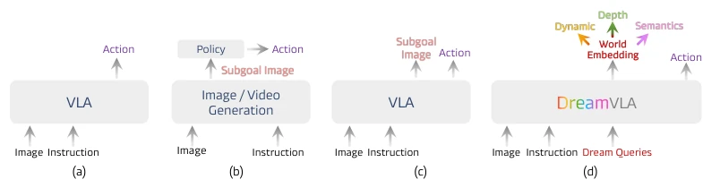
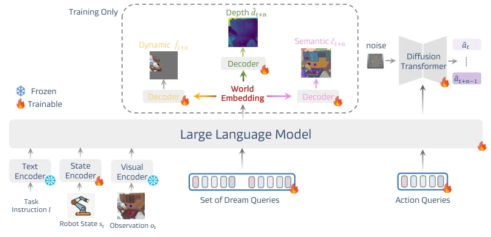
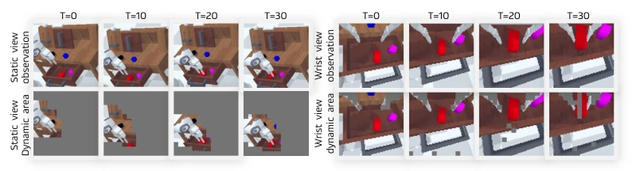
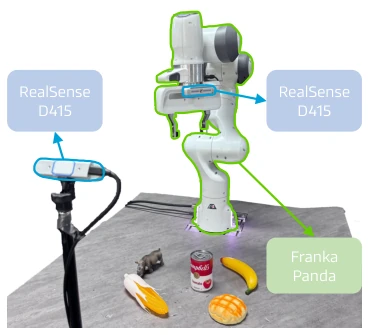
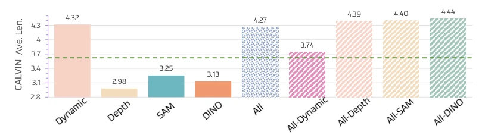
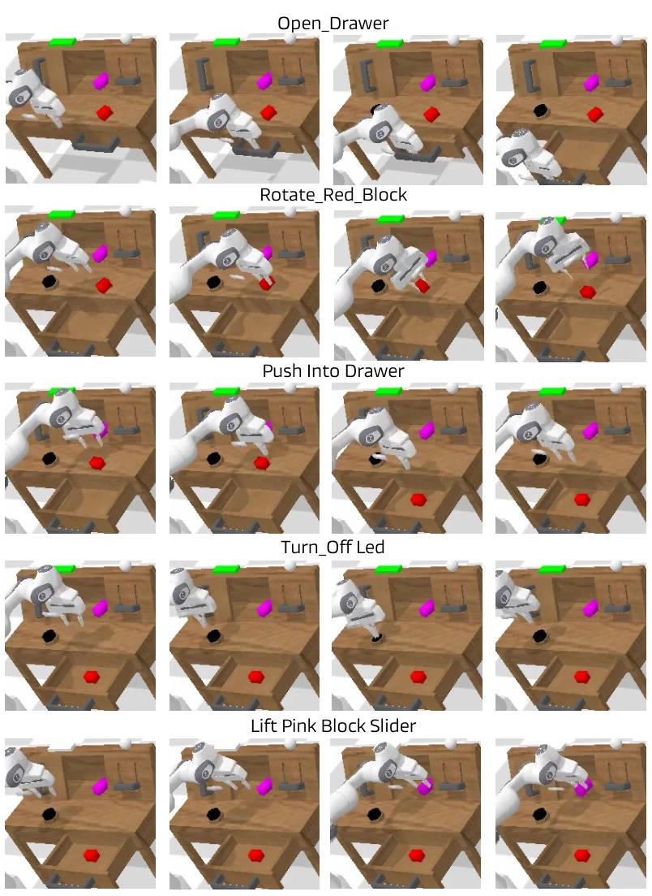
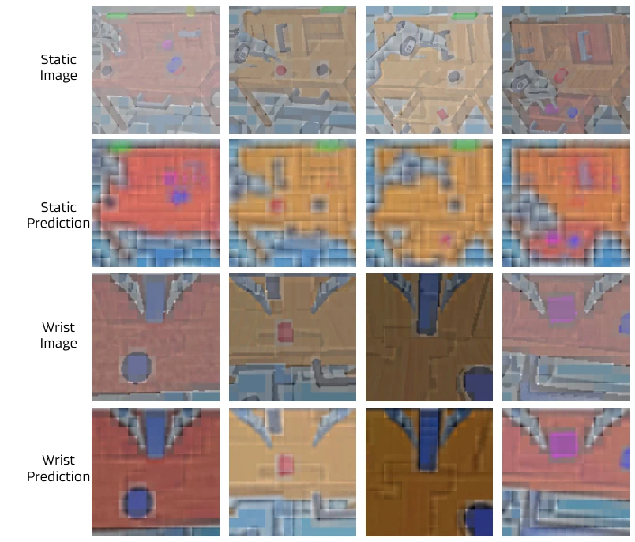
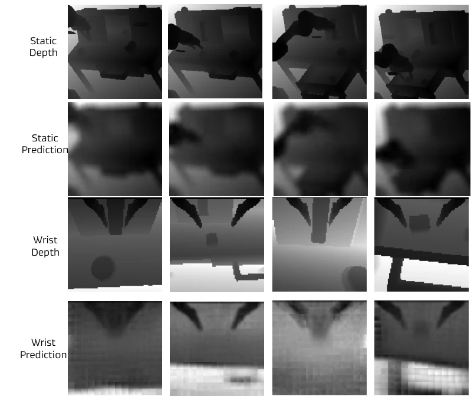
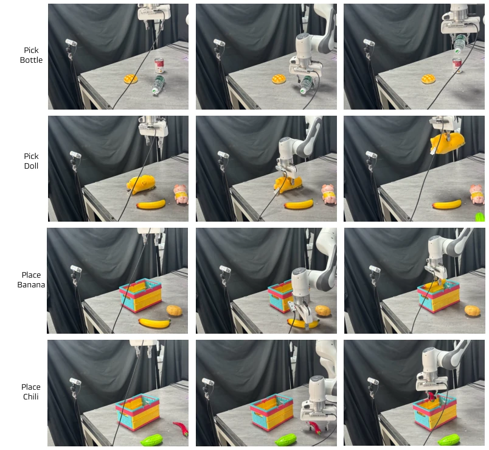

The name DreamVLA sounds quite esoteric; claiming to 'dream' actually means downgrading future prediction from 'pixel-level reconstruction' to 'key information extraction'. This operation is somewhat like giving the robot a 'cheat code' for x-ray vision; instead of blindly guessing what the next frame looks like, it directly predicts where it will move, the depth, and what objects are involved. Although it topped the leaderboard on CALVIN, looking closely at the experiments, it mainly relies on robotic arm grasping; dexterous hands and complex contacts are not yet fully mastered. Moreover, the prediction head is removed during inference; does this not count as 'drawing a pie without eating it'? However, saving computational resources is a good thing. Overall, the idea is clear, but far from a general-purpose robot; don't be fooled by the term 'world knowledge', the essence is still feature extraction, and it relies heavily on RGB data, with generalization yet to be verified.
Existing VLA models mostly directly map vision to action, lacking the 'prediction' ability like humans. Although some methods introduce video generation models for future frame prediction [3, 5], pixel redundancy is severe, and key 3D spatial and high-level semantic information is lost [1]. For example, OpenVLA [1] uses direct mapping, lacking reasoning steps; while Copilot-based methods [118, 121] increase inference latency. More troublesome is that pixel-level prediction easily traps the model in background noise, ignoring dynamic regions related to actions. We need a more compact, more 'physical laws' intermediate representation, rather than simply reconstructing images, so as to establish an effective perception-prediction-action closed loop.

Figure 1: (a) Vanilla VLA directly maps visual observations and language instructions to actions. (b) Models leveraging separate image/video generation or copilot models to generate future frames or trajectories, subsequently guiding an action head. (c) VLA variants explicitly predict a subgoal image as an intermediate visual reasoning step prior to action generation. (d) Our proposed DreamVLA, which explicitly predicts dynamic regions, depth map, semantics (DINOv2 and SAM) knowledge, significantly enhances the model’s action reasoning and generalization.
The overall process is a 'Perception-Prediction-Action' closed loop. Inputs instructions, images, and states, entering the LLM backbone through an encoder. The core innovation is the `<dream>` query, which does not predict the whole image, but splits into three sub-queries: dynamic regions, depth, and semantics. To prevent information crosstalk, a block-structured attention mechanism is designed, blocking direct interaction between these three sub-queries, only letting them focus on shared context. Action generation uses Diffusion Transformer, sampling multi-step actions from noise. During training, dedicated decoding heads output prediction results (dynamic mask, depth map, semantic features), but during inference, these heads are directly skipped, using world Embedding to guide actions, retaining the reasoning advantage brought by prediction while reducing latency. This design lets the model focus on 'where it will move' rather than 'what it looks like', improving planning efficiency.

Figure 2: Framework Overview. Given the current robot state st, observation ot, and language instruction, DreamVLA encodes multimodal inputs via frozen text, visual encoders and a tunable state encoder. These tokens, together with a learnable set of <dream> queries, are processed by a large language model to produce world embedding. Three lightweight decoders then project each corresponding element of this embedding into the dynamics region ˆft+n, monocular depth ˆdt+n and high-level semantics ˆct+n. A separate <action> query draws a latent action embedding, which conditions a diffusion transformer that refines Gaussian noise into an n-step action sequence ˆat:t+n−1. The dashed box highlights prediction heads that are used only during training; inference skips these heads and operates dire

Figure 3: Visualization of dynamic regions over time. We show the static camera (left) and wrist-mounted camera (right) observations alongside the corresponding dynamic masks generated by our method at multiple time steps. The masks highlight dynamic regions by leveraging optical flow trajectories extracted via CoTracker [68, 67]. Compared to the original observations, our method effectively suppresses irrelevant background and focuses on interaction-relevant areas (e.g., moving objects and end-effector), enabling more structured and efficient action reasoning.
On CALVIN and LIBERO simulation benchmarks, DreamVLA achieved SOTA results; CALVIN ABC-D average task length reached 4.44, superior to OpenVLA [1] and UP-VLA [57]. Real-world Franka Panda experiment success rate 76.7%, significantly higher than Diffusion Policy [90]. Ablation experiments found that predicting dynamic regions yields the greatest benefit; predicting depth or semantics alone might instead interfere with training. The structured attention mechanism is also more effective than ordinary causal masks. However, experiments mainly focus on grasping and drawer operations; dexterous hands and complex contact tasks are not yet covered, and heavy reliance on RGB data limits generalization ability in complex geometric scenarios.

Figure 5: Real-world experiment setup.

Figure 6: CALVIN ABC-D performance with respect to different combinations of knowledge prediction. All=all of five models, and All-X=taking X out of All.

Figure 7: Qualitative results of the CALVIN long horizon task.

Figure 8: Visualization results of the dynamic region predictions.

Figure 9: Visualization results of the depth maps.

Figure 10: Qualitative results of real world language-grounded manipulation.